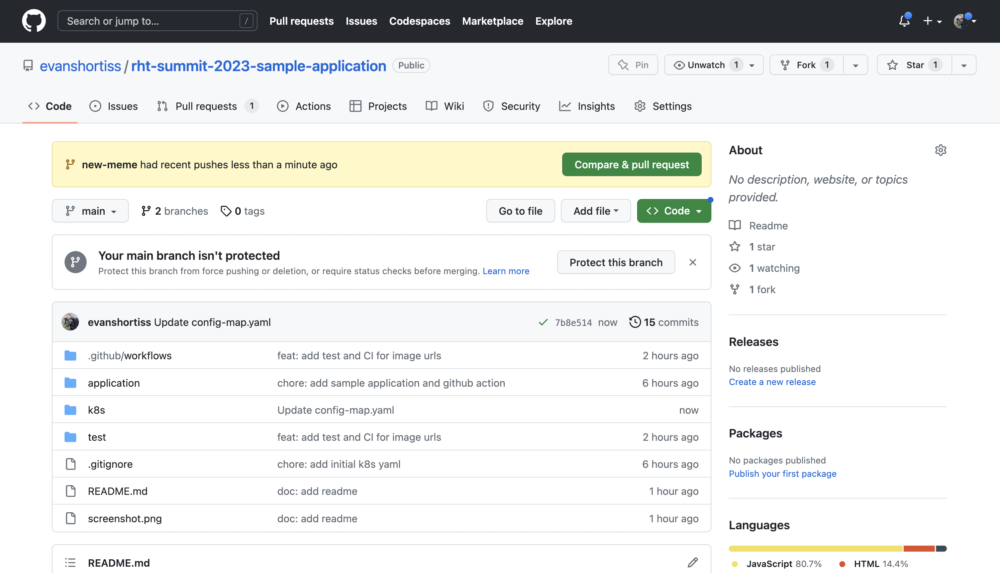
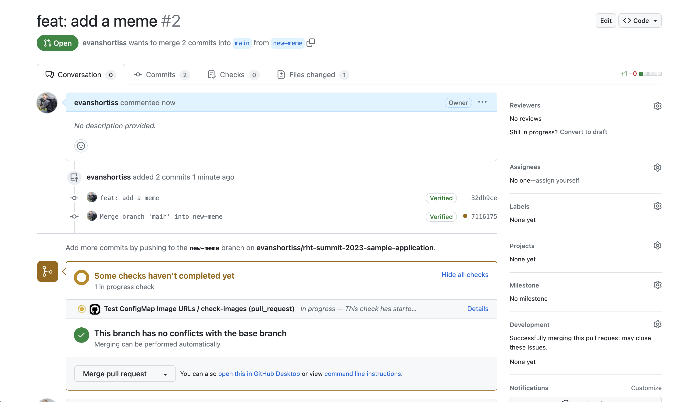

Making a Code Change and Triggering the Continuous Integration (CI) Process Nice work on getting the application deployed on OpenShift! Now you’ll make a change to the application’s dev environment configuration, verify it passes CI, merge the change into the main branch and watch as Argo CD detects and applies the new change. Head over to your copy of the random-meme application repository: github.com/%USERID%/rht-summit-2023-sample-application. Use the period/dot key as a shortcut to open the GitHub IDE. Once the GitHub IDE has loaded: Click the branch name (main by default) in the bottom left. Select Create new branch in the popup that appears. Enter the branch name new-meme and press the enter key. Click the green Switch to branch button when promoted. Use the following image as a guide for completing the prior steps: Add a new image to the k8s/overlays/development/config-map.yaml file. You can use the URL of any image that you like. The URL of the image must resolve to an image file, and not a page that contains the image. If the URL ends in an extension such as .png or .jpg then it’ll likely resolve directly to an image. Select the Source Control view from the side-menu. Enter a commit message and push your change. This new branch can be used to create a pull request. Creating the pull request will invoke a CI process, after which the code change can be merged to the main branch. It’s common to use a trunk-based development model with Argo CD. That’s why your pull request targets the main branch, and not a development or staging branch. The k8s/overlays directory contains a unique configuration for each environment. Since the application is containerised, each of the k8s/overlays (i.e environments) can be updated to point to a specific container image tag etc. Return to your copy of the random-meme application repository. It should display a message that your new-meme branch had changes, and it suggests opening a pull request.  Click on the Compare & pull request button. On the Open a pull request screen, scroll down and click the Create pull request button. Approve the pending checks if prompted, then wait for them to complete.  Do not merge the pull request yet. If the CI check fails, it most likely means that a URL you added to the ConfigMap doesn’t resolve to an image or there’s a syntax error in the JSON array in the ConfigMap. Make sure that your chosen URL returns an image and not a page that contains an image since that will fail the CI check. Another thing to be aware of is to make sure the image URL in the ConfigMap is surrounded by quotes, and that you haven’t misplaced a comma. Once the CI checks have passed move on to the next section. Setup Continuous Delivery